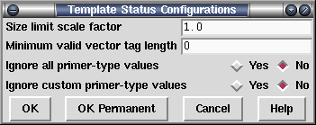

This option allows control over computation of the template status. The validity of a template is computed by checking the size (based on the locations of assembled readings and position of vector tags) and the orientation of sequences (based on their "primer type" values).

The most likely item to need changing is the "size limit scale factor". The expected range of template sizes for a ligation are specified in each template record as a minimum-to-maximum range. Gap4 takes a very simple approach as anything within this range is valid and anything outside it is invalid. The scale factor is applied such that the maximum range becomes "max * scale" and the minimum range becomes "min / scale". So a scale factor of 2 would adjust a range from 1.0-1.4Kb to 0.5-2.8Kb.
The "minimum valid vector tag length" is designed to workaround problems where some assemblies end up with SVEC tags of 1 or 2 bases long (which are common when converting from phrap for some reason). The start and end of a template may be derived from observing a single reading with sequencing vector at both ends, so the presence of very short falsely added SVEC tags will mark many templates as inconsistent.
The "Ignore all primer-type values" and "Ignore custom primer-type values" are methods to disable Gap4's trust in the primer type information for each sequence. Normally this will be one of universal-forward, universal-reverse, custom-forward (e.g. from a primer-walk) and custom-reverse.